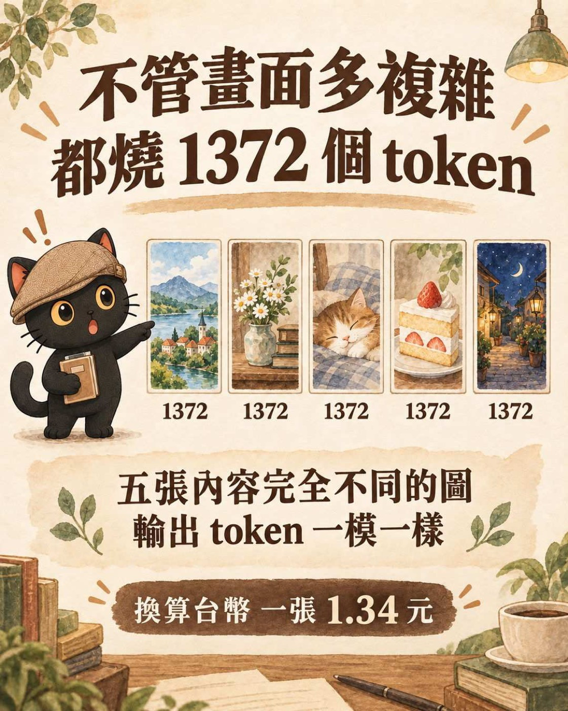
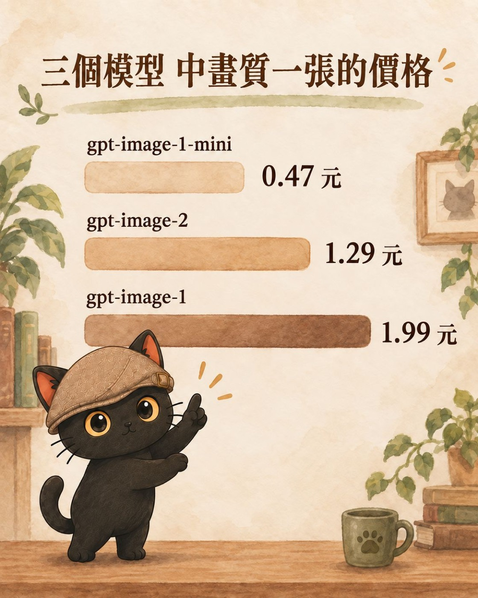
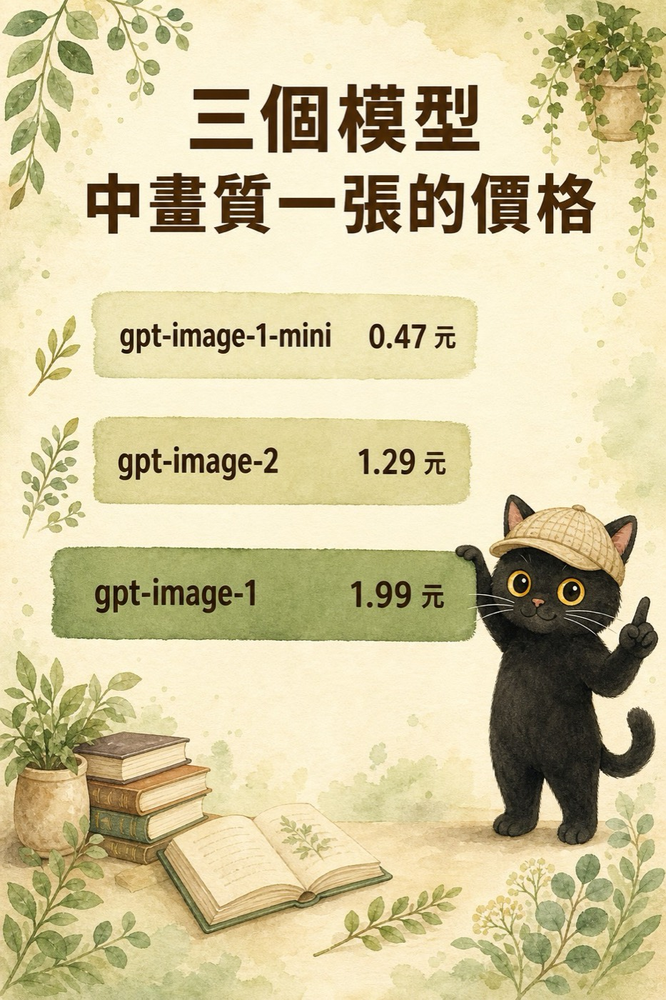
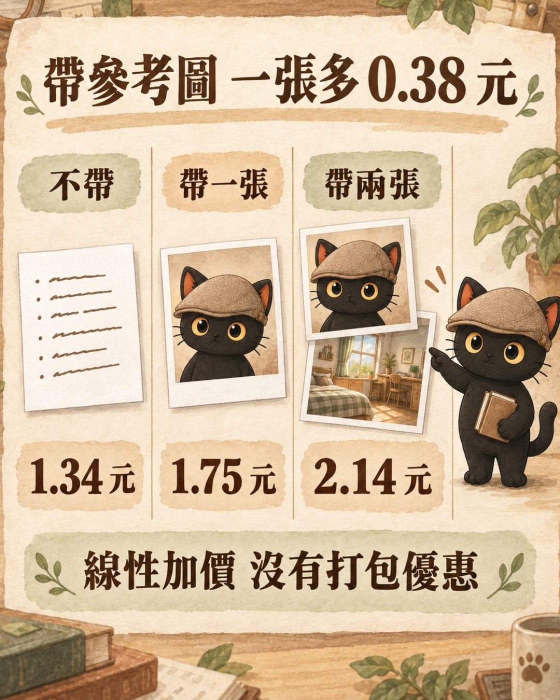
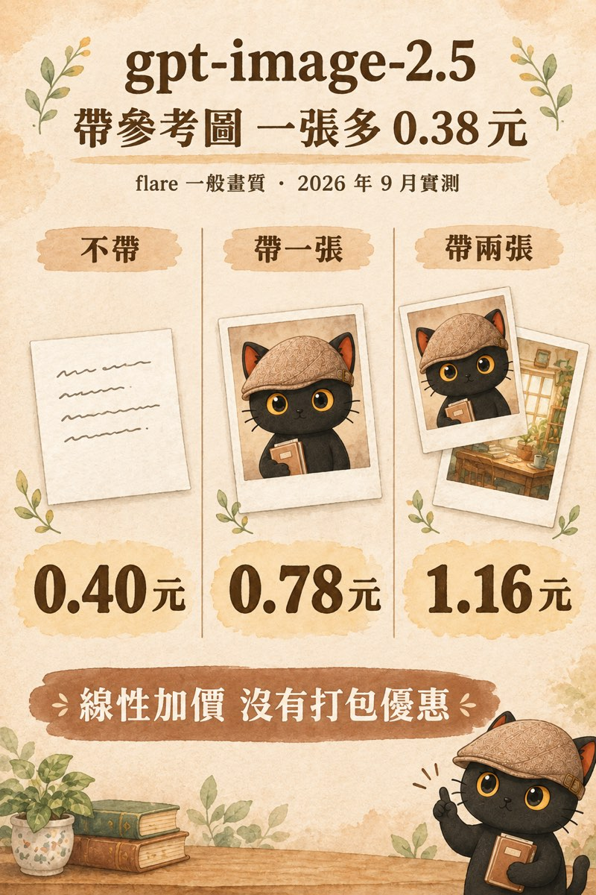
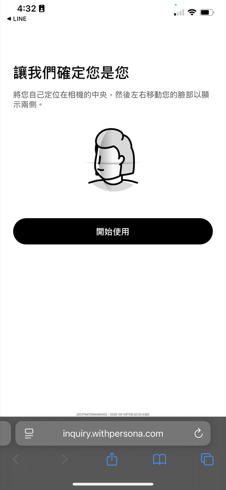
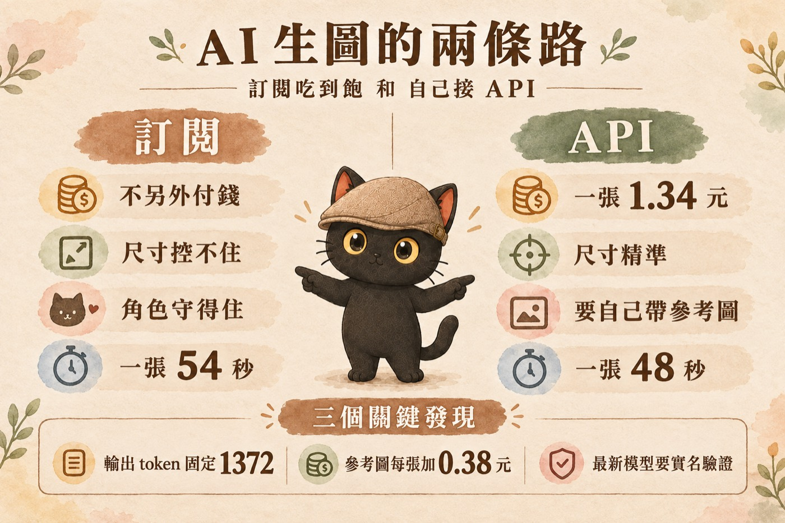
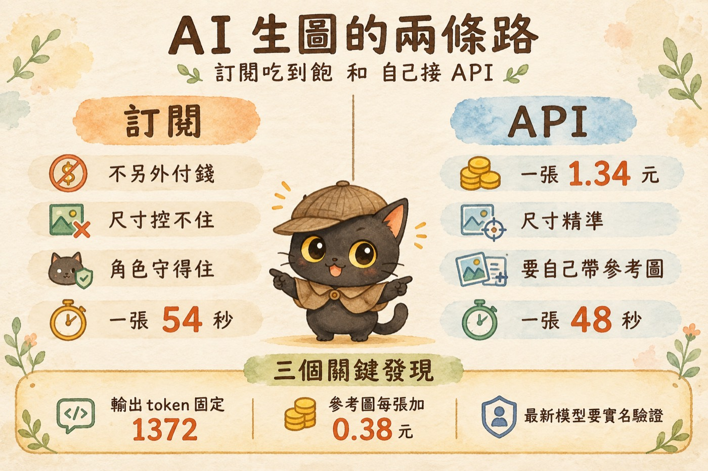
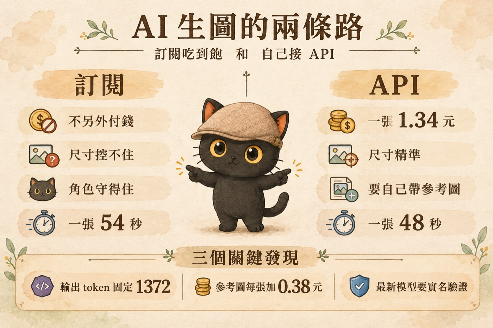

好好笑喔。我看一堆人都在比 gpt-image-2.5 圖有沒有生得更好看，我在算有沒有更便宜 😭
AI 的費用會越來越貴，免費補貼的時期已經差不多到頭了。所以不管是自學、創業，還是被老闆交辦工作，都要認真算一下成本跟產出。
我會開始算這筆帳，是因為我自己先被它卡到。免費版的生圖額度一路縮水，我的工作坊現場開始有人生不了圖。這篇把那筆帳算清楚：讓 AI 實測十幾張圖，量出每張的真實成本、參考圖要加多少錢、新舊模型差多少。結論是一張 0.40 元，一個學員生五張 2 元。
· 帶生圖工作坊或課程，被學員的免費額度卡過的講師
· 想自己接 OpenAI 生圖 API，但查不到一張到底多少錢的人
· 有品牌角色或固定視覺風格，需要每張圖都長一樣的人
· 一張圖的成本怎麼算：token 怎麼計、參考圖加多少、可不可以事前預估
· gpt-image-2.5 與 gpt-image-2 的實測對照，含耗時、token 與台幣單價
· 訂閱和 API 兩條路的實測對照，包含速度、重生率、尺寸與角色一致性
· 一段可以直接貼給 AI 的技術規格，省掉端點選錯與模型被擋的坑
工作坊現場會出事的那一刻
我帶手機創作的工作坊，會讓大家玩 AI 生圖。
這件事以前不是問題。免費版的 ChatGPT 生圖額度，我印象中一開始有十張，後來變五張、三張。現在免費版可能只剩一張，有些學員光是在設計提示詞、來回調整的階段，額度就用完了。
如果是好玩性質的體驗工作坊，那還好。但如果一個班裡面三分之二的學員生不了圖，現場就很尷尬。如果是正式收費的工作坊，那就是麻煩了。
我也不可能為了讓大家生幾張圖，叫學員先去付 690 訂閱 ChatGPT。只為了上這一堂課付一個月的訂閱費，對他們不划算。
這個問題我以為查一下就有答案。結果讓 AI 查了兩個小時，發現官方沒有直接把價目表放出來，網路上的文章彼此打架，有的把轉售平台的價格當成官方價在寫。
查不到就自己測。我開了一把 API key 給它，讓它實際跑十幾張圖，把帳單攤開來看。這篇是那些圖跑出來的東西。有幾個發現跟我原本想的相反，其中一個還是 AI 自己出的錯，被我抓到之後才修回來。
先講清楚，其實有兩條路
第一條路就是大家平常在用的那條：打開 ChatGPT，跟它說你要什麼圖，它就生給你。這條走的是訂閱額度，月費付了，生圖不另外收錢，額度用完就只能等隔天。
第二條路是去 OpenAI 開一把 API key，讓程式直接跟它要圖。這條沒有月費，改成按張計費，生一張扣一張的錢，不生就不扣。
兩條路的差別不只有錢。我平常派工的工具是 Codex，它有一個內建的生圖能力。我叫它把自己的工具規格報出來，整個能傳給它的參數只有三個：要生什麼的文字描述、參考圖的檔案路徑、要不要帶進前面幾張圖。
沒有模型選項，沒有畫質選項，沒有尺寸選項。
這代表我在指令裡明明白白寫「直式 4:5」，它給我的是 1122x1402，這個比例不是 4:5。比例只能用文字拜託，不能指定。反過來走 API，同樣一張圖我指定 1024x1536，跑五次，五張全部都是 1024x1536，一個像素不差。
發現一：API 的成本是固定的
直覺會以為，畫面越複雜的圖越貴。畢竟圖裡東西多，模型要做的事也多。實際上不是這樣，圖片內容複不複雜，完全不影響費用。
我用同一個模型、同一個畫質、同一個尺寸，跑了五張內容完全不同的圖卡。有一張塞了三行模型名稱加三個價格數字，有一張只有一個簡單的儀表。五張的輸出 token 全部都是 1372，一個不差。
Token 是 OpenAI 計費的單位。生一張圖，模型要吐出多少料，那個料的數量就是 token，帳單按這個數字收錢。所以「輸出 token 固定」的意思是，這張圖要花多少錢，在你按下去之前就已經定了。

算法是這樣：輸出的 1372 個 token，用 gpt-image-2 的圖片輸出價每百萬 30 美元去算，是 0.041 美元。加上我寫的那段指令，大概 250 到 300 個文字 token，用每百萬 5 美元算，大約 0.0015 美元。
一張圖 0.0426 美元，換成台幣大約 1.34 元。
指令長短幾乎不影響結果。那 250 個文字 token 只佔總成本的 3%，就算我把指令寫成兩倍長，一張也只多幾毛錢的零頭。真正在燒錢的是輸出那張圖本身。一場課如果要生 60 張，大約 80 元。
發現二：角色走樣了，問題出在我這邊
我有一個品牌角色叫咪卡，是一隻戴著扁帽的小黑貓。我的圖卡都有它。API 那五張生出來，數字全對、排版漂亮，但咪卡不是咪卡了。帽子從米褐色的扁帽變成格紋獵鹿帽，整體配色也從暖棕變成綠色。

米褐色扁帽、金黃大圓眼、暖橘內耳，跟角色參考圖一致。
帽子變成格紋獵鹿帽，配色從暖棕跑到綠色，不是同一隻貓。我問 AI 為什麼。它給我的第一個答案是：API 的限制，讀不到本機技能包裡的角色設定。
這個答案我沒接受。技能包是我自己建的，裡面該有的東西我知道有，所以我叫它回去查，是 API 真的做不到，還是它沒做。查完，兩個地方都是它自己漏掉。
第一，技能包裡本來就有一份角色鎖定規則，白紙黑字禁止鴨舌帽，還附了一段現成的提示詞可以直接複製。它沒去讀那份檔，憑印象自己寫了「米色編織花紋的鴨舌帽」。獵鹿帽是這樣來的。
第二，端點選錯。OpenAI 的生圖有兩個端點，/v1/images/generations 是純文字生圖，不吃參考圖；/v1/images/edits 可以帶參考圖進去。它用了前面那個，然後把「不能帶圖」講成 API 的限制。
改用 edits 端點，把咪卡的角色參考圖帶進去，同一份指令重生一次，咪卡就回來了。同一隻貓，帽子、眼睛、內耳、身形全部對上。
建知識庫、寫規則的價值就在這裡。規則不是寫給 AI 看就沒事了，是寫給你自己當標準用的。AI 說做不到的時候，你要有東西可以對照，才知道該不該相信它。
發現三：參考圖是按張加錢的
既然帶參考圖有效，那帶兩張會不會更穩？順手叫它再跑一張測。
讀進去 0 個圖片 token
一張 1.34 元
讀進去 1505 個圖片 token
一張 1.75 元
讀進去 3041 個圖片 token
一張 2.14 元

每張參考圖加 0.38 元。
每張參考圖一樣加 0.38 元。兩張擺在一起就看得很清楚：新舊模型的起跳價差很多，但參考圖的加價一模一樣。變便宜的是輸出那一段，參考圖那一段沒動過。
兩張參考圖讀進去的 token 幾乎剛好是一張的兩倍，1505 變成 3041。所以參考圖是線性加價，沒有打包優惠。輸出那 1372 個 token 完全沒變，貴的部分全部在讀進去的圖。換算下來，每多帶一張參考圖，一張成本多 0.38 元。
後來 2.5 開通，我又補測了一次帶兩張的：讀進去 3010 個圖片 token，跟舊模型的 3041 幾乎一樣，剛好也是一張 1505 的兩倍。所以參考圖的加價規則是跨模型的，換哪一顆都是每張 0.38 元。會變的是輸出那一段，換模型換畫質才會動。
這個數字要放在一起看才有意義：不帶參考圖 1.34 元，但角色會走樣，走樣就要重生，重生一次就是再 1.34 元。帶一張參考圖 1.75 元，一次到位。多花的四毛錢，買的是不用重來。
所以參考圖的帳，兩條路都要付：API 收你錢，訂閱收你時間。差別是 API 那筆你事前算得出來，訂閱那筆你要等到圖生出來才知道今天比較慢。
發現四：最新的模型要實名驗證才能用
我本來也想測 OpenAI 最新的 gpt-image-2.5，它有兩個型號，一個主打快、一個主打改圖精準。打過去直接被擋：
翻成白話就是，你的組織必須先通過驗證才能用這個模型。這跟付不付錢無關，卡的是准入。同一把 key，打 gpt-image-2 通行無阻，打 2.5 就被擋。
我實際去走了一遍。到 OpenAI 後台的組織設定頁，找到 Verifications 那一區點下去，它會把你轉到一個叫 Persona 的第三方驗證服務。要交政府核發的照片證件，然後還要開相機做臉部辨識。

送出之後狀態會變成 Identity in review，也就是審核中。頁面上還註明一件事：這組身分是綁在帳號上的，通過之後每 90 天可以拿去驗證另一個組織。
OpenAI 這麼做的理由是防濫用。2025 年開始，前沿模型陸續加上這道門檻，他們公開講過的原因包括違規使用，以及有人透過 API 大量取用資料去訓練自己的模型。
發現五：新模型比舊模型便宜，而且快一倍
驗證一過，我馬上叫它去測 gpt-image-2.5-flare，就是主打快的那顆。我讓它生一張一頁總結的圖卡，橫式，三種設定各跑一次。
19.2 秒 · 輸出 343 tokens
一張 0.40 元
27.0 秒 · 輸出 343 tokens
一張 0.78 元
24.4 秒 · 輸出 1372 tokens
一張 1.76 元
拿前面測過的舊模型當對照：gpt-image-2 一般畫質帶一張參考圖，46 秒、1372 tokens、一張 1.75 元。

再看第一列：flare 一般畫質不帶參考圖，一張 0.40 元、19 秒。輸出 token 從 1372 掉到 343。畫質檔位換了，模型吐出來的圖片 token 數就跟著換，價格差在這裡，不在畫面複雜度。這跟發現一是同一回事：成本是設定決定的，不是內容決定的。
帶跟不帶，我拿同一份指令跑了一次乾淨對照
前面那些數字是零散測出來的。最後我又跑了一次條件完全一致的對照：同一份 prompt、同一個模型、同一個畫質、同一個尺寸，唯一的變數只有帶不帶那張咪卡角色參考圖。

標題、數字、排版全對。但咪卡變成別隻貓：帽子長出圓鈕、多一條披風、嘴巴張開。
同一份指令，帽子、眼睛、內耳、身形全部對上。多花 0.38 元、多等 7.8 秒。我技能包裡的角色規則寫得很明白：不要圓頂帽、不要頂部鈕扣。但模型沒看過那份規則，它只看到我寫的那句「戴米褐色低頂斜檐偵探扁帽」，然後照自己的理解畫。
速度跟重生率，反而是訂閱吃虧
跑完之後我把兩條路的數字並排。
每張 48 到 58 秒，平均 54 秒
五張成品實際生了 7 次
尺寸跟著參考圖走，控不住
品牌角色守得住
每張成本 0 元
每張 44.8 到 51.3 秒，平均 48 秒
五張一次過
尺寸精準，五張完全一致
角色要自己帶參考圖
每張 1.34 到 1.75 元
速度上 API 快一點，但差距只有 11%，我認為在誤差範圍內，不會影響選擇。
不過這是舊模型的數字。換成 2.5 flare，一張 19 到 27 秒，訂閱那條是 48 到 58 秒，大約快一倍，這個差距就不在誤差範圍內了。
比較有感的是重生。訂閱那五張，有兩張要重來：一張多長了一條空白的價格條，一張角色的手腳畫錯還多冒出一個問號。五張成品實際生了七次。API 那五張一次過。這可能是運氣，也可能是因為我寫給 API 的指令更精確，樣本太少不能下定論。
但重生這件事值得放進成本考量：訂閱不用付錢，但要付時間，還要有人盯著看哪張要重來。
所以我會怎麼選
要進系統、尺寸要精準、成本要能預估。一張 0.40 元、19 秒。我的學員生圖工作站就是走這條。
一張 0.78 元、27 秒。多的 0.38 元買的是角色不會跑掉，比走樣之後重生便宜。
額度本來就在付，多生一張也不心疼。只是要接受尺寸控不住，比例跑掉自己裁。
已經不用特地選 gpt-image-2 了。同樣帶一張參考圖，它 1.75 元、46 秒，flare 高畫質 1.76 元、24 秒。價格一樣，速度差一倍。這種事情不測就不會知道。
給 AI 讀的備忘
這段是給你貼給 AI 的。如果你要它幫你接 OpenAI 生圖 API，把這段一起貼過去，可以省掉我今天踩的坑。
回到材料費怎麼算
算完這一輪，我的材料費就有底了。
學員在工作坊裡生的是他們自己的圖，不用固定我的品牌角色，所以不用帶參考圖。走 gpt-image-2.5-flare 一般畫質，一張 0.40 元。
flare 一般畫質、不帶參考圖
0.40 元
生 5 張
2 元
整場材料費
60 元
我一開始是拿舊模型、又帶著參考圖算的，同樣的班要 260 元。就算舊模型也不帶參考圖，一張 1.34 元，三十人還是要 201 元。差別在選對模型。這也是我要自己測的理由：不測就只能拿最保守的數字去抓預算，抓出來的數字會讓人猶豫要不要做這件事。
這個數字放進報名費裡，學員不用另外辦帳號、不用付月費、不用在課堂上擔心額度什麼時候用完，來了就能生。
對我來說這是可以吸收的成本。對學員來說，這變成一件他們不用煩惱的事。
這些價格是 2026-09-09 實測的。模型會換代，價格也會跟著動，所以這篇的數字是給你一個算法，不是一張永久有效的價目表。
順帶一提，這篇的數字是我讓 AI 實測跑出來的，不是從別的文章抄的。中間那個「API 守不住品牌角色」的錯誤結論，如果我當場信了，這篇就會多一段錯的內容出去。抓到它的方法不是我比 AI 懂 API，是我知道自己的技能包裡寫了什麼。